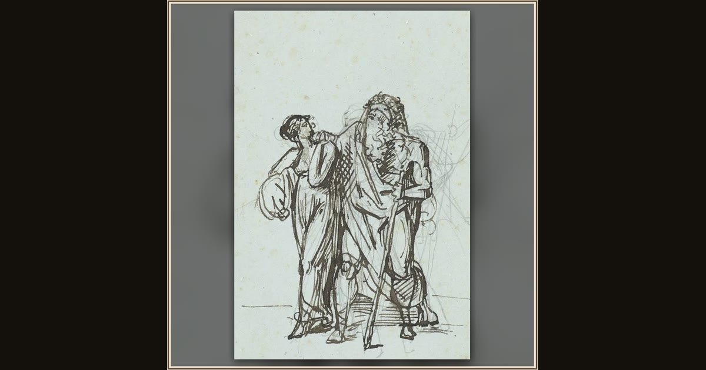

De blinde Oedipus door Antigone geleid
David Pièrre Giottino Humbert de Superville · 1780 - 1849 · rijksmuseum
A pen sketch of the blinded Oedipus, staff in hand, guided by his daughter Antigone; the messenger reports that he now lacks strength and needs someone to guide his steps (1292). Explore its place in Sophocles's Plays, Oedipus Tyrannus, line 1247.